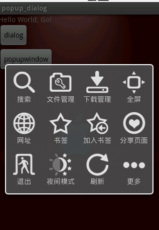
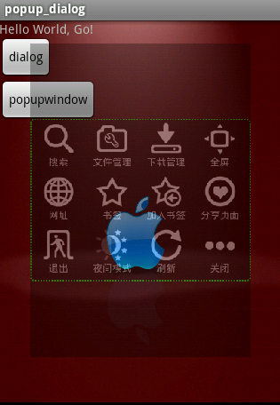

Android实现半透明的popupwindow的源码
网上搜了一下，没合适的，最多的就是两种:
1.设置半透明主题
2.设置window的alpha值
WindowManager.LayoutParams lp = getWindow().getAttributes();lp.alpha = 0.5f; //0.0-1.0
getWindow().setAttributes(lp);
发现这两种都不能满足要求，起码的颜色就不太对。想做好点，做成类似alertDialog的样子，带边框，弹出窗口带动画效果，之后背景置灰，那多帅。
看到那个仿uc浏览器的源码，是用alertdialog做的，达到那种效果，加点动画就行了。下图是从那个ucweb源码里面弄出来的。

上面的代码就不贴了，我上传的项目文件里面也有。
下面是弹出popupwindow的图片，第一张是动画中，第二张是完全弹出的：


弹出popwindow的代码如下，比较乱，多包涵：
popupWindow = new PopupWindow(menuView, LayoutParams.FILL_PARENT,LayoutParams.FILL_PARENT, true);
popupWindow.showAtLocation(findViewById(R.id.parent), Gravity.CENTER
| Gravity.CENTER, 0, 0);
popupWindow.setAnimationStyle(R.style.PopupAnimation);
// 加上下面两行可以用back键关闭popupwindow，否则必须调用dismiss();
ColorDrawable dw = new ColorDrawable(-00000);
popupWindow.setBackgroundDrawable(dw);
popupWindow.update();
下面是实现步骤：
1 背景置灰：
popupWindow = new PopupWindow(menuView, LayoutParams.FILL_PARENT,LayoutParams.FILL_PARENT, true);
第二三个参数必须是LayoutParams.FILL_PARENT，这样才能填充整个屏幕，达到背景置灰的目的。
整个popupwindow里面是一个GridView，图片什么的也是用的那个仿UC浏览器界面项目的，在此谢谢了。
关键的东西都在xml里面。
<?xml version="1.0" encoding="utf-8"?><LinearLayout xmlns:android="http://schemas.android.com/apk/res/android
android:layout_width="fill_parent
android:layout_height="fill_parent
android:layout_gravity="center
android:background="b0000000
android:gravity="center
android:orientation="vertical" >
<LinearLayout
android:layout_width="wrap_content
android:layout_height="wrap_content
android:layout_gravity="center
android:background="@drawable/downbutton_corner
android:gravity="center
android:orientation="vertical" >
<GridView
android:id="@+id/gridview
android:layout_width="wrap_content
android:layout_height="wrap_content
android:layout_gravity="center
android:gravity="center
android:horizontalSpacing="5dip
android:numColumns="4
android:stretchMode="columnWidth
android:verticalSpacing="5dip" />
</LinearLayout>
</LinearLayout>
第一个linearlayout里面的android:background="b0000000"，就是全屏背景，网上搜的好多半透明都是“e0000000”，我觉得那颜色太深，“b0000000”更合适。
第二个linearlayout是popupwind的背景，里面的android:background="@drawable/downbutton_corner"是关键，边框，圆角都是里面定义的。
2 popupwindow的边框，圆角背景。downbutton_corne.xml
<shape xmlns:android="http://schemas.android.com/apk/res/androidandroid:shape="rectangle" >
<gradient
android:angle="90
android:endColor="c0000000
android:startColor="c0000000" />
<!-- 背景颜色渐变 -->
<stroke
android:dashGap="2dp
android:dashWidth="2dp
android:width="2dp
android:color="FF00ff00" >
</stroke>
<!-- 描边 -->
<corners
android:bottomLeftRadius="5dp
android:bottomRightRadius="5dp
android:topLeftRadius="5dp
android:topRightRadius="5dp" />
<!-- 设置圆角 -->
</shape>
这个涉及到shape画图，要是不懂的话。网上很多资料，搜一下就是了。
<gradient android:startColor="c0000000" android:endColor="c0000000" android:angle="90" /><!--背景颜色渐变 -->
我就设置了一个固定的颜色"c0000000"。android:angle="90"这个是设置颜色渐变方向，从上到下啊，从左到右啊，貌似只能90的倍数，也只有四个方向嘛。
<stroke ></stroke>,边框就是这个实现的。
dashWidth指的是边线的宽度 dashGap 指的是每条线之间的间距，（因为是边线是很多小横线组成的）。
3 淡入淡出动画
popupWindow.setAnimationStyle(R.style.PopupAnimation);
这条代码是设置style的，动画文件就是在style文件里面引入的。下面是淡入的动画，动画教程网上也很多。淡出的动画就这些参数值交换位置就是了。android:duration这个是持续时间，为了截图，我把它弄成5秒了。
<set xmlns:android="http://schemas.android.com/apk/res/android" ><scale
android:duration="5000
android:fromXScale="0.6
android:fromYScale="0.6
android:pivotX="50%
android:pivotY="50%
android:toXScale="1.0
android:toYScale="1.0" />
<alpha
android:duration="5000
android:fromAlpha="0.0
android:interpolator="@android:anim/decelerate_interpolator
android:toAlpha="1.0" />
</set>
大概就是这些了。
还有一个关键的问题。弹出pop之后，back键无效了，必须在pop里面设置事件dismiss掉。是因为没设置背景的原因。
popupWindow.setBackgroundDrawable(new BitmapDrawable());// 把这一行放在showAtLocation前面就行了，以前是放在后面的，粗心了。
popupWindow.showAtLocation(findViewById(R.id.parent), Gravity.CENTER
| Gravity.CENTER, 0, 0);
网上也有很多人说，弹出pop之后，不响应键盘事件了，这个其实是焦点在pop里面的view去了。
以这个为例，焦点就在gridview上面去了。
在gridview加上setOnKeyListener，就能解决。
menuGrid.setOnKeyListener(new OnKeyListener() { @Override
public boolean onKey(View v, int keyCode, KeyEvent event) {
switch (keyCode) {
case KeyEvent.KEYCODE_MENU:
if (popupWindow != null && popupWindow.isShowing()) {
popupWindow.dismiss();
System.out.println("menuGridfdsfdsfdfd");
}
break;
}
return true;
}
});
/**
* ColorDrawable dw = new ColorDrawable(-00000);
* popupWindow.setBackgroundDrawable(dw);
* 本来看了个示例，加上上面这两行就不用调用dismiss，点击窗口之外的部位，或者按back键都能关闭窗口。 但是我这样写了，还是不行。
* 而且竟然捕获不到键盘事件，杯具，希望哪个解决了这个问题告诉我，谢谢。 ytdcr@tom.com
*/
/*
* @Override public boolean onKeyDown(int keyCode, KeyEvent event) { switch
* (keyCode) { case KeyEvent.KEYCODE_BACK: if (popupWindow != null) {
* popupWindow.dismiss(); }
*
* Toast.makeText(this, "fd", 1000).show(); break;
*
* } return super.onKeyUp(keyCode, event); }
*/